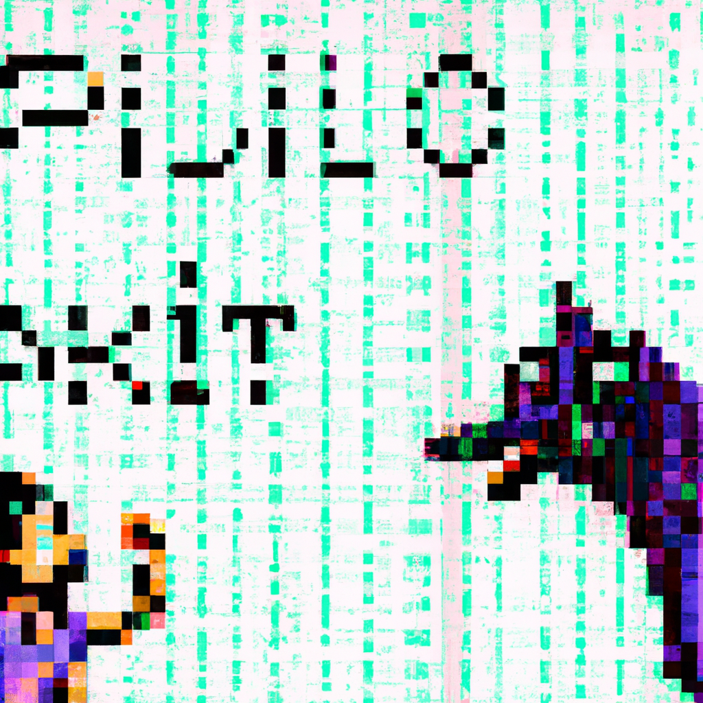

The future of Python and AI
Python and AI are two of the most popular technologies in the world today. With the rise of Artificial Intelligence and Machine Learning, Python has become an invaluable tool for developers. This is due to its flexibility and robust libraries, which allow for powerful applications to be created quickly and easily.
As AI technology advances, so does the potential for Python-driven applications. Companies like OpenAI have developed APIs that allow developers to create applications using natural language processing, image recognition, and other areas of AI-powered technology. These APIs make it possible for developers to create powerful applications with minimal effort.
In addition to AI technology, Python can be used to create powerful web applications as well as a variety of other software solutions. With the number of libraries available, it is easier than ever for developers to create complex applications with minimal effort.
The future potential of Python-driven applications is huge. As AI technology continues to advance, so will the opportunities for developers using Python. From virtual assistants to autonomous vehicles, there are many possibilities for what can be created using this versatile language.
In conclusion, there is a lot of potential when it comes to creating powerful applications with Python and AI technologies. With these two advancements in technology continuing to grow, developers should take advantage of their combined potential in order to create innovative products that could revolutionize our lives in the near future!